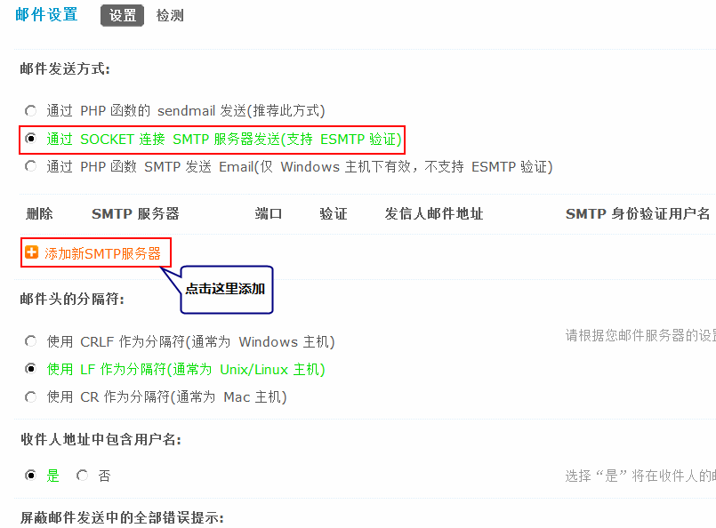
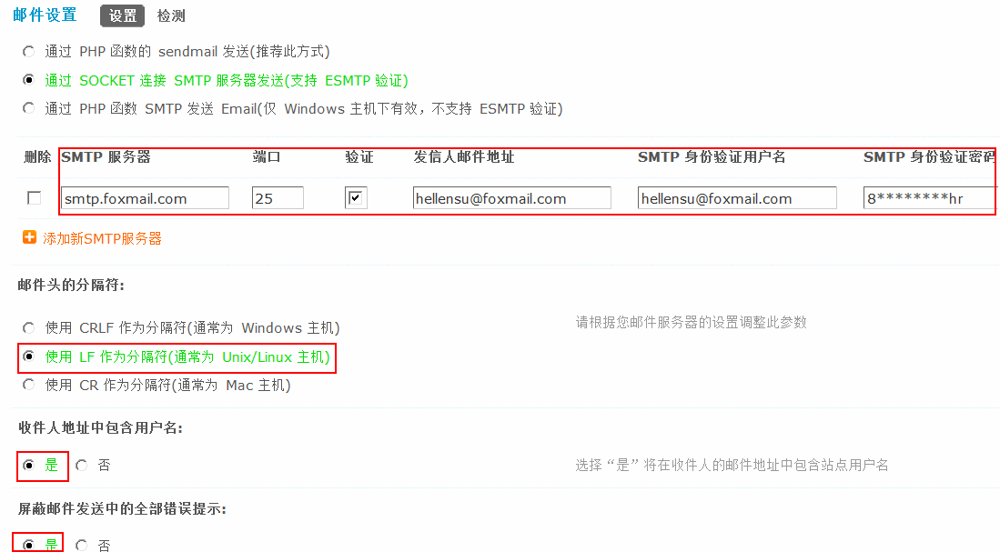
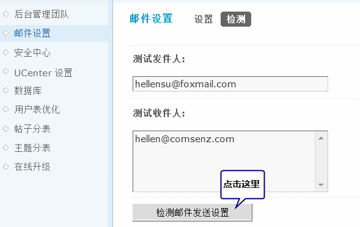
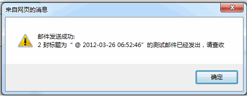

邮件设置
说明：Discuz! 的邮件功能，对于站长来说是相当重要的，如果用户忘记密码，可以通过邮件直接取回，比较方便下面为大家仔细讲解如果设置邮件功能。
一、Discuz! 支持如下三种邮件发送方式：
1、通过 PHP 函数的 sendmail 发送(推荐此方式)
说明：
这种方式是使用 PHP 的函数发送邮件，需要服务器上安装邮件系统。一般的虚拟主机都内置邮件系统。因此推荐使用这种方式。
2、通过 SOCKET 连接 SMTP 服务器发送(支持 ESMTP 验证)
说明：
这种方式适用于 win 或者 linux 类服务器使用（适合于虚拟主机或者独立主机使用），并且支持 ESMTP 验证。需要站长拥有一个 SMTP 服务器，例如 Foxmail 的 SMTP 服务器。
3、通过 PHP 函数 SMTP 发送 Email(仅 Windows 主机下有效, 不支持 ESMTP 验证)
说明：这种方式仅仅适合于 win 主机。对系统环境要求较高，不推荐使用。
用户可以根据自己的情况来选择使用哪一种方式
二、邮件头的分隔符分为三种
1、使用 CRLF 作为分隔符(通常为 Windows 主机)
2、使用 LF 作为分隔符(通常为 Unix/Linux 主机)
3、使用 CR 作为分隔符(通常为 Mac 主机)
说明：这里根据您使用的邮件服务器系统选择邮件头的分隔符。
三、下面我们以第二种邮件发送方式为例详细介绍一下设置邮件功能的整个过程：
1、首先我们需要注册一个邮箱，如 Foxmail的邮箱，邮箱名为：hellensu@foxmail.com
2、站点创始人登录 Discuz! 的后台 => 站长 => 邮件设置，选择“通过 SOCKET 连接 SMTP 服务器发送(支持 ESMTP 验证)”如下图所示：
点击“添加新SMTP服务器”然后填写SMTP服务器、SMTP端口、是否验证、发件人邮件地址、SMTP身份验证用户名和SMTP 身份验证密码信息，这里可以增加多个SMTP服务器。
SMTP 服务器：填写 SMTP 服务器 地址，如：smtp.foxmail.com
SMTP 端口：默认一般为 25。可以根据自己所用 SMTP 端口的不同进行填写。
说明：验证这里建议大家选择“是”。
发信人邮件地址：填写发件人的邮件地址。
SMTP 身份验证用户名：填写的邮件地址同上。
SMTP 身份验证密码：填写邮箱的密码。
3、邮件头的分隔符选择使用 LF 作为分隔符。
收件人地址中包含用户名：选择“是”将在收件人的邮件地址中包含站点用户名。
屏蔽邮件发送中的全部错误提示：选择“是”将屏蔽邮件发送中的全部错误提示。
四、检测
要想知道设置的邮件功能会员是否能正常收到邮件，我们需要测试一下
填写好发件人和收件人邮箱后，点击“检测邮件发送设置”如果邮件设置成功会提示如下图所示：
